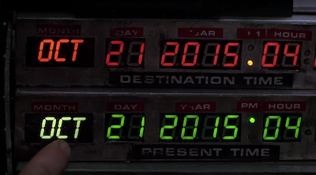

Most issues in software development usually arise from poor, inconsistent knowledge of the domain at hand. A topic apparently as simple as time representation, serialization and management can easily cause a number of problems both to the neophyte and to the experienced programmer.
In this post, we'll see that there's no need to be a Time Lord to grasp the very simple few concepts needed not to incur into time management hell.

Representation
A question as simple as "What time is it?" assumes a number of contextual subleties that are obvious to the human brain, but become absolute nonsense for a computer.
For instance, if you were asking me what time is it right now, I might say: "It's 3:39" and, if you were a colleague in my office, that'd be enough information to infer that it's 3:39pm CEST. That's because you would already be in possession of some bits of important contextual information such as
- it's an afternoon because we've already had lunch
- we're in Rome, therefore our timezone is Central European Time (CET) or Central European Summer Time (CEST)
- we've switched to daylight savings time a few weeks earlier, so the current timezone must be Central European Summer Time
3:39 only happens to be a convenient representation of time as long as we're in possession of the contextual bits. In order to represent time in a universal way, you should have an idea what UTC and timezones are.
Please do not confuse UTC with GMT: although their time matches, they are two different things: one is an universal standard while the other is a timezone. When someone says they're using GMT, unless that person has a funny scottish accent, what they really mean is UTC.
As an amateur radio operator, I have contacts with people from all over the world. Every operator is required to keep a log of his contacts, and we usually exchange so called QSL cards, which are a written confirmation of the contact. Of course a QSL card must report the exact time of the radio contact and by convention it's in UTC. I know that when I receive a QSL card from any fellow amateur radio operator, no matter where he is located across the whole wide world, I can look up the contact in my logbook and the date and time info is going to match, as we are both adhering to the same standard: UTC.
Now, suppose I have to schedule a Skype chat with a fellow software developer in the US. I could write him an email and say something along the lines of "see you on 2/3". In Italy, that would be the second day in the month of march, but to a US person, that would be the third day in the month of february. As you can see, our chat is never going to happen.
These are only a few examples of the kind of issues that might arise when representing date and time information. Luckily enough, there is a solution to the representation conundrums, namely the ISO 8601 standard or, better yet RFC 3339.
Just to give you an example, in RFC 3339, 1994-11-05T08:15:30-05:00
corresponds to November 5, 1994, 8:15:30 am, US Eastern Standard Time.
1994-11-05T13:15:30Z corresponds to the same instant (the Z stands for UTC).
Same instant, different representations.
RFC 3339 also has the nice side effect of providing natural sorting in systems that use lexicographical order (such as filesystems) because information is organized from most to least significant, i.e. year, month, day, hour, minute, second, fraction of a second1.
Even if you're only dealing with local times in your software, you should know that, unless you also display the time zone, you can never be sure of the time. I cannot remember how many times a developer has asked me to fix the time on the server, only to discover that his software was printing time in UTC.
At display time, it is okay to deal with partial representation of time because the user experience requires so. Just make sure, when debugging, to print out the whole set of information, including the time zone, otherwise you can never be sure what you're looking at is what you actually think it is.
Although a given moment in time is immutable, there is an arbitrary number of ways to express it. And we've not even talked about the Julian or Indian calendars or stuff like expressing durations!
Let me summarize a few key points to bring home so far:
- get to know time zones and UTC
- do not confuse UTC and GMT
- RFC 3339 and ISO 8601 are your friends
- always print the time zone while debugging

Serialization
Speaking of software, serialization is a process where you take an object's status and spell it out in such a way that it can be later entirely rebuilt, exactly like the original, by using the spelt out (serialized) information. Think of a xml or json file:
{
"person": {
"name": "Mirko",
"surname": "Caserta",
"class": "nerd"
}
}
This is the serialized form of a peculiar imaginary person class instance.
In the binary world of computers, time is usually serialized and stored by using
the Unix time convention. As I'm
writing this, my Unix time is 1366191727. That is: 1366191727 seconds have
passed since January 1st, 1970 at 00:00 UTC. Isn't that a pretty clever,
consistent and compact way of representing a plethora of information, such as
April 17 2013 @ 11:42:07am CEST?
Unix time is only another arbitrary representation of a given moment in time, although a not very human-readable one. But you can take that number, write it on a piece of paper, stick it onto a carrier pigeon, and your recipient would be able to decipher your vital message by simply turning to the Internet and visiting a site such as unixtimestamp.com or currentmillis.com.
If you're a command line junkie like me, on Linux systems you can use:
$ date -d @1366191727
Wed Apr 17 11:42:07 CEST 2013
However, on BSD derived systems such as Mac OS X, date -d won’t work so you have to used instead:
$ date -r 1366191727
Wed Apr 17 11:42:07 CEST 2013
Just like you can write that number on a piece of paper and later get back the full instant back to life, you can store it in a file or a row in your favorite RDBMS. Although you might want to talk to your RDBMS using a proper driver and handing it a plain date instance; your driver will then take care of the conversion to the underlying database serialization format for native time instances.
By storing time using a native format, you get the nice time formatting, sorting, querying, etc features of your RDBMS for free, so you might want to think twice before storing plain Unix timestamps in, say, Oracle.
Just make sure you know what timezone your Unix timestamp refers to, or you might get confused later at deserialization time. By default, a Unix timestamp is in UTC. If you use your system's libraries, you should be okay.
When working with databases, use the most appropriate data types. For instance
in Oracle, there's
four different data types:
DATE, TIMESTAMP, TIMESTAMP WITH TIME ZONE and
TIMESTAMP WITH LOCAL TIME ZONE. Also, databases usually have a concept of
database timezone and session timezone, so make sure you understand how your
specific database is using those. A user that opens a session with timezone A
is going to see different values than a user connecting with timezone B.
ISO 8601 is also a serialization favorite. In fact, it is used in the
XML Schema standard. Most xml
frameworks are natively able to serialize and deserialize back and forth from
xs:date, xs:time and xs:dateTime to your programming language's native
format (and viceversa). The same is true for json. Just be careful when dealing
with partial representations: for instance, if you omit the time zone, make sure
you agree beforehand on a default one with your communicating party (usually UTC
or your local time zone if you're both in the same one).
Management
First of all, if you think you can write your own time management software library, or even write a little routine that adds or subtracts arbitrary values from the time of the day, please allow me to show you the source code for the java.util.Date and java.util.GregorianCalendar classes from JDK 7, respectively weighting 1331 and 3179 lines of code.
Okay, these are probably not the best examples of software routines that deal with time, I agree. That's why Java libraries like Joda Time were written. In fact, Joda Time has become so popular that it gave birth to JSR-310 and is now part of JDK 8.
Use of popular, well-designed and implemented time frameworks will save your life. Seriously. Take your time to get familiar with the API of your choosing.
Common Time Tasks in Java
Let's see how all this translates into java code. Any language will of course be different but everything I'm doing here should be possible in your language of choice.
Please do not use java.util.Date or java.util.Calendar. We don't use that
classes anymore. The new time api is in the java.time package.
{{
Testing
In Java there's a Clock class that allows plugging in an arbitrarily
configurable clock implementation for use in the time api. This is especially
useful in unit testing and debugging. Other languages should have an equivalent
functionality.
https://docs.oracle.com/javase/8/docs/api/java/time/Clock.html
Further Resources
Here are a few useful links I've accumulated over time:
- How to Think About Time in Programming
- UTC is enough for everyone... right?
- The Problem with Time & Timezones - Computerphile
- Falsehoods programmers believe about time
- Storing UTC is not a silver bullet
- The 5 laws of API dates and times
- Storing Date/Times in Databases
- 5 Levels of Handling Date and Time in Python
- Timezone Bullshit
- ISO 8601: the better date format
- A summary of the international standard date and time notation
- A Short History of the Modern Calendar
- Should We 'Heed the Science and Abolish Daylight Saving Time'?
- Converting world timezones with DuckDuckGo and Wolfram Alpha from the browser address bar
- When a Calendar Defeated Russia in the 1908 Olympics
- Why does China Have Only One Time Zone?
- First day meme
- Glory to ISO8601 Subreddit
- Time.is
- TIME:ENNA Timezone Converter
- How Ancient Romans Kept Time
- rtc: rk808: Compensate for Rockchip calendar deviation on November 31st
- Daylight saving time is 'not helpful' and has 'no upsides' experts say
- Neil deGrasse Tyson Reminds Us Daylight Saving Time is Ridiculous
- A "Day" Isn't What It Used To Be
- Why Time Zones Exist
- xkcd: Dailight Calendar
- xkcd: Edge Cake
- How does Britain know what time it is?
- Clockwork raises $21M to keep server clocks in sync
- How to Fix Daylight Saving Time
- US Senate Unanimously Passes Bill to Make Daylight Saving Time Permanent
- The Daily WTF: Starting your Date
- Tech Giants Want To Banish the Leap Second To Stop Internet Crashes
- Meta calls for the death of the leap second
- Satellites Keep the World’s Clocks on Time. What if They Fail?
- Stop using utcnow and utcfromtimestamp
- Dall'ora legale all'ora solare: i pro e contro del cambio orario e perché si parla di abolizione
- Deer-vehicle collisions spike when daylight saving time ends
- The Falling Dates
- Scientists Don’t Want to Count Leap Seconds, so They’re Going Away
- What time is it on the Moon?
- What time is it on the moon? Europe pushing for lunar time zone
- What time is it? A simple question with a complex answer. How computers synchronize time
- The Daylight Saving Time Mess Just Won't Go Away
- The best way to handle time zones in a Java web application
- Your Calendrical Fallacy Is...
- Greenland Solves the Daylight Saving Time Debate
- Time Zone and Currency Database in JDK
- (There Ought To Be A) Moonlight Saving Time
- We don’t do DST at this company
- Daylight Savings Time be like
- List of 2024 leap day bugs
- California State Legislator Proposes Ending DST
- The science behind why people hate Daylight Saving Time so much
- Storing UTC is not a silver bullet
- JS Dates Are About to Be Fixed
- Researchers Figure Out How To Keep Clocks On the Earth, Moon In Sync 13
- NASA confirms it’s developing the Moon’s new time zone
- Storing times for human events
- Date and Time Mappings with Hibernate and JPA
- I Found the Dumbest Time Zone
- A Server for Matching Long/Lat to Timezone
Memes


assuming the same timezone is used everywhere